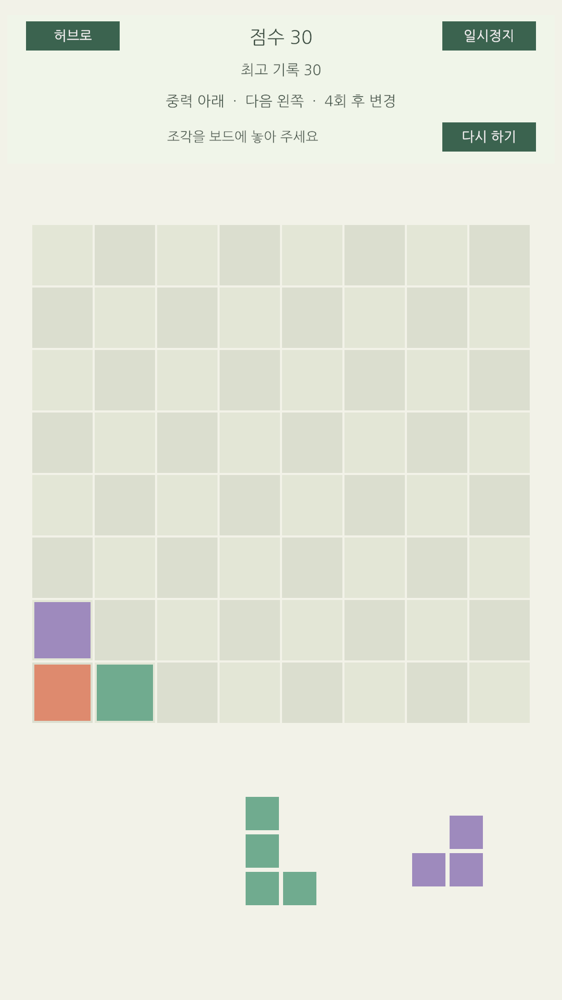

Block Gravity 플레이 화면 적용 안내
SpriteRenderer 보드·트레이·드래그와 uGUI HUD를 연결했다. 구현과 복사본 검증은 완료했으며, 원본 GameScene에는 Unity 메뉴로 적용한다.


복사한 프로젝트의 1080×1920 렌더링. 조각 하나를 사용한 뒤의 화면이다.
지금 동작하는 것
- 마우스·터치로 조각을 집어 보드에 배치하고 유효·무효 위치를 확인한다.
- 잘못 놓거나 취소하면 트레이로 돌아온다. 추가 손가락은 드래그를 이어받지 않는다.
- 블록 이동·줄 삭제·중력 방향 변경을 순서대로 표현하고 연출 중 추가 입력을 막는다.
- 점수, 최고 기록, 현재·다음 중력과 남은 배치 횟수를 HUD에 표시한다.
- 일시정지·ESC, 포커스 상실, 팝업 입력 차단, 다시 하기와 허브 복귀를 연결한다.
- 화면 크기와 Safe Area 변경 시 카메라·HUD·트레이를 다시 배치한다.
Unity에서 적용할 순서
- Play Mode를 종료하고 컴파일 완료를 기다린다.
- UI Frames 적용 전이라면
Pocket Arcade → UI Frames → 1. Migrate Prefabs And Hosts를 실행한다. Pocket Arcade → Localization → 1. Apply String Table And Korean Font를 실행한다.Pocket Arcade → Block Gravity → 1. Create Playfield And Connect GameScene을 실행한다.Pocket Arcade → Block Gravity → 2. Validate Playfield를 실행한다.- BootScene부터 Play하고 Block Gravity를 선택한다. 조각 배치 → 일시정지/복귀 → 다시 하기 → 허브 복귀를 확인한다.
생성 메뉴는 GameScene과 BootResources.json을 백업하고, 새 프리팹을 만들며, GameScene의 UI 호스트와 카메라를 연결한다. 기존 게임 프리팹은 덮어쓰지 않는다. 이미 사전 로딩을 마친 Play 세션에서 씬만 다시 시작하면 새 리소스를 사용할 수 없으므로 Play를 종료한 뒤 BootScene부터 시작한다.
UI Frames 메뉴를 나중에 다시 실행했다면
UI Frames 마이그레이션은 GameScene의 rootKey를 이전 GameEntry로 지정할 수 있다. 마지막에 Block Gravity 1번 메뉴를 다시 실행해 새 HUD 연결을 복원한다.
확인한 범위
| 항목 | 결과 |
|---|---|
| 전체 Edit Mode | 196/196 통과. 기존 187개 + 새 표시·프리팹·씬·부트 검사 9개. |
| Play Mode | 9/9 통과. 가상 마우스·멀티터치 입력, 배치·취소, 연출 잠금, 일시정지, 포커스, UI 차단, 5턴 중력 변경, 재시작·호스트 해제. |
| 렌더링 | GPU로 한국어 HUD·보드·트레이를 캡처하고 배치를 확인. |
| 원본 프로젝트 적용 | 위 Unity 메뉴 실행과 사용자 Play 확인 필요. |
| Android 기기 | 빌드·터치·기기 성능 확인은 아직 미실행. |
초기 검증에서 수정한 부분
기존 UI Frames 메뉴의 Canvas null 처리를 수정했다. UI Raycast와 가상 입력 테스트는 Canvas 준비 시점과 배치 GameView 포커스 조건을 보완한 뒤 통과했다. 앱의 실제 입력 설정은 변경하지 않았다. 초기 임포트의 Collab Proxy 패키지 경고는 새 게임 코드의 오류와 구분했다.
원본 씬을 자동 적용하지 않은 이유
기존 프로젝트 명세는 Unity MCP가 연결되지 않으면 C#과 에디터 스크립트를 준비하고 사용자가 Unity Editor에서 실행할 절차를 안내하도록 정한다. 이번에는 복사한 검증 프로젝트에서만 생성 메뉴와 Play Mode를 실행했다.